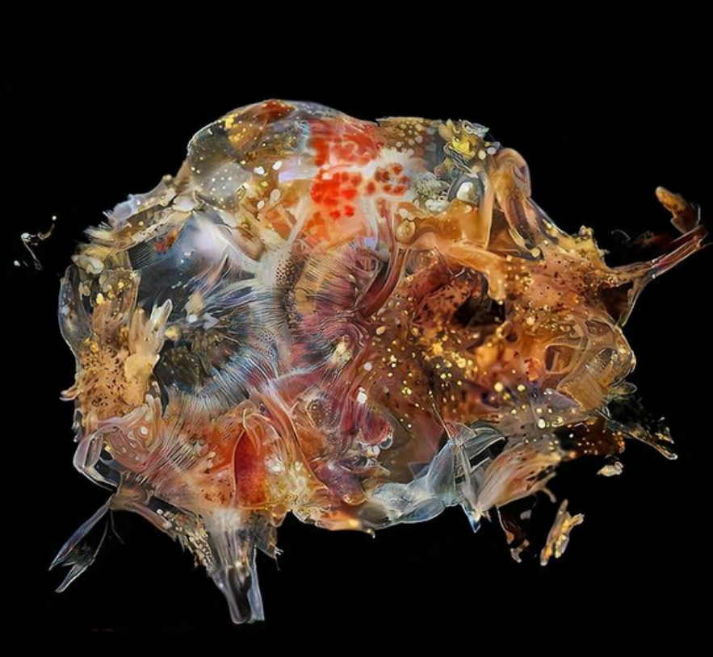
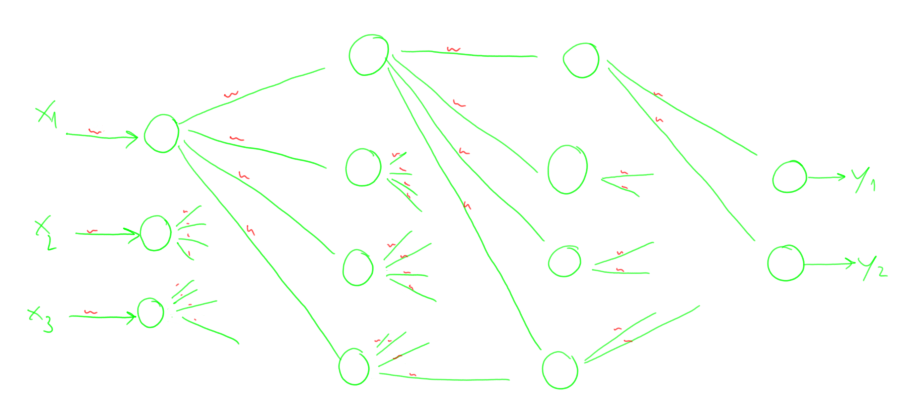
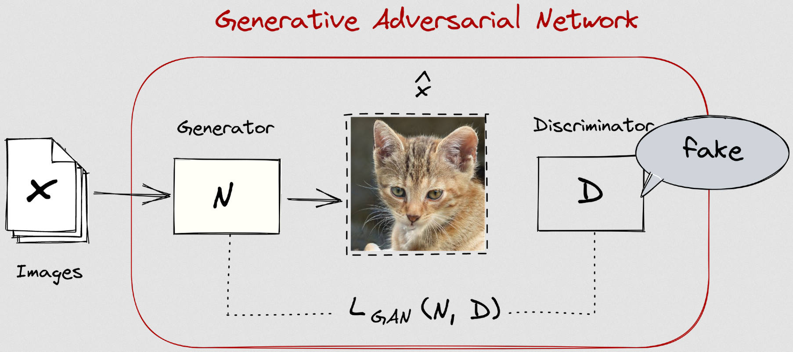

class: center, middle .title[Creative Coding and Software Design 3] <br/><br/> .subtitle[Week 10: GANs - datasets & training] <br/><br/><br/><br/><br/><br/> .date[Dec 2024] <br/><br/><br/> .note[Created with [Liminal](https://github.com/jonathanlilly/liminal) using [Remark.js](http://remarkjs.com/) + [Markdown](https://github.com/adam-p/markdown-here/wiki/Markdown-Cheatsheet) + [KaTeX](https://katex.org)] ??? Author: Grigore Burloiu, UNATC --- name: toc class: left # ★ Table of Contents ★ <!-- omit in toc --> 1. [Generative models](#generative-models) 2. [GAN intuition](#gan-intuition) 3. [StyleGAN](#stylegan) 4. [Dataset guidelines](#dataset-guidelines) 5. [Training tips](#training-tips) <!-- Comment out the next slide if you don't want the Table of Contents link --> --- layout: true .toc[[★](#toc)] --- <iframe width="100%" height="600" src="https://www.youtube.com/embed/KFjetkiHaVE" title="YouTube video player" frameborder="0" allow="accelerometer; autoplay; clipboard-write; encrypted-media; gyroscope; picture-in-picture" allowfullscreen></iframe> --- name: generative-models # Generative models [Intro to generative nets](https://openai.com/index/generative-models/) classic blog @ OpenAI [ML for Creativity and Design](https://neuripscreativityworkshop.github.io/2023/) [workshops](https://x.com/ML4CDworkshop) @ [NeurIPS](https://neurips.cc/virtual/2023/workshop/66545) recap [deep convolutional nets](../slides/03-05-transfer#deep-convolutional-nns) (CNN) --- class: center ## 2017 - pix2pix [Image-to-Image Translation with Conditional Adversarial Nets](https://phillipi.github.io/pix2pix/) <img width="100%" src="https://phillipi.github.io/pix2pix/images/teaser_v3.png"> - see also: [CycleGAN and pix2pix](https://github.com/junyanz/pytorch-CycleGAN-and-pix2pix) --- class: center ## 2018 - AttnGAN [This AI is bad at drawing but will try anyways](https://www.aiweirdness.com/this-ai-is-bad-at-drawing-but-will-18-08-17/) <img width="100%" src="https://www.aiweirdness.com/content/images/public/images/ceef484c-ecd5-416f-8311-0052a3999346_1504x972.png"> --- class: center ## 2019 - StyleGAN [This person does not exist](https://thisxdoesnotexist.com/) <img width="100%" src="https://github.com/NVlabs/stylegan/raw/master/stylegan-teaser.png"> --- ## GAN&co artists .left-column[ [Gene Kogan](https://twitter.com/genekogan/status/1058759055056035840), [Sofia Crespo](https://twitter.com/soficrespo91), [Anna Ridler](https://twitter.com/annaridler), [Robert Luxemburg](https://twitter.com/robertluxemburg), [Hannu Töyrylä](https://twitter.com/htoyryla), [Memo Akten](https://twitter.com/memotv), [Aydao](https://twitter.com/aydaoai), [Vadim Epstein](https://twitter.com/eps696), [Ryan Murdock](https://twitter.com/advadnoun), [dribnet](https://twitter.com/dribnet), [crumb](https://twitter.com/aicrumb), [RiversHaveWings](https://twitter.com/RiversHaveWings), [sportsracer48](https://twitter.com/sportsracer48) ] .right-column[  ] --- name: gan-intuition # GAN intuition .left-column[ artist: *I present my work.* ] .right-column[ critic: *good / no good* ] --- ## GAN intuition .left-column[ artist ] .right-column[ critic ] -- .left-column[ **G**enerator ] .right-column[ **D**iscriminator ] -- .left-column[  ] .right-column[ <img style="width:66%" src="../attachments/ml-classification.png"> ] <br/><br/><br/><br/><br/><br/><br/><br/><br/><br/><br/><br/> > trained together > - adversarially - *n* epochs **D**, one epoch **G** etc --- ## GAN intuition [](https://ljvmiranda921.github.io/notebook/2021/08/08/clip-vqgan/) [Scott Hawley DL course](https://github.com/drscotthawley/DLAIE/blob/main/Lessons/12_GAN_Overview.ipynb) [Jeff Heaton DL course](https://github.com/jeffheaton/app_deep_learning/blob/main/t81_558_class_07_1_img_generative.ipynb) [intro course](http://introtodeeplearning.com/) @ MIT [GANs](https://docs.fast.ai/vision.gan.html) @ fastai --- name: stylegan # StyleGAN .right-column[ <iframe width="100%" height="300" src="https://www.youtube.com/embed/c-NJtV9Jvp0" title="YouTube video player" frameborder="0" allow="accelerometer; autoplay; clipboard-write; encrypted-media; gyroscope; picture-in-picture" allowfullscreen></iframe> ] [StyleGAN](https://github.com/NVlabs/stylegan) fewer artifacts > [StyleGAN2](https://github.com/NVlabs/stylegan2) smaller training datasets > [StyleGAN2-ADA](https://github.com/NVlabs/stylegan2-ada-pytorch) better for video and animation > [StyleGAN3](https://github.com/NVlabs/stylegan3) [comparison](https://www.youtube.com/watch?v=LArTgflsL98&feature=youtu.be&list=PLWuCzxqIpJs8ViuBIUtAk-dsAtdrApYoy&t=763) --- ## The process build dataset > get images > > process & curate them train model > data augmentation & other params interact w/ trained model --- name: dataset-guidelines # Dataset guidelines square - (e.g. 512x512 pixels) many images - (how many is enough? Depends on architecture & content... hundreds ok, 1000+ better) similar content / same category variety no text no / minimal extra content [dataset building notebook](https://colab.research.google.com/drive/1R4iPwpEqStq2P3JlECnUBFc6q06TC2eq) [training SG in 2022](https://youtu.be/uRLV26zlyZw) --- name: training-tips # Training tips use one of these: - [stylegan3-fun](https://github.com/PDillis/stylegan3-fun) by Diego Porres - [SG3 training notebook](https://github.com/dvschultz/stylegan3/blob/main/SG3.ipynb) by Derrick Schultz [read](https://github.com/dvschultz/stylegan3/blob/main/docs/configs.md) the readmes start from pre-trained model! colab: [attach google drive](https://colab.research.google.com/notebooks/io.ipynb) / [download from gdrive link](https://stackoverflow.com/questions/62759748/downloading-data-from-a-shared-google-drive-link-in-google-colab) augmentations: mirror, translate ... overfitting = too much training = memorize not generalize = (re)generating dataset [dataset blending](https://youtu.be/_MKxfjg4pk0) other ML models: [move from github to colab](https://youtu.be/yRbvqCdfHF8)